Design document · Archive Supplied visual references Reference imagery supplied during design development. These are not original sprite assets. Unknown attribution remains unknown; filenames are retained for provenance.
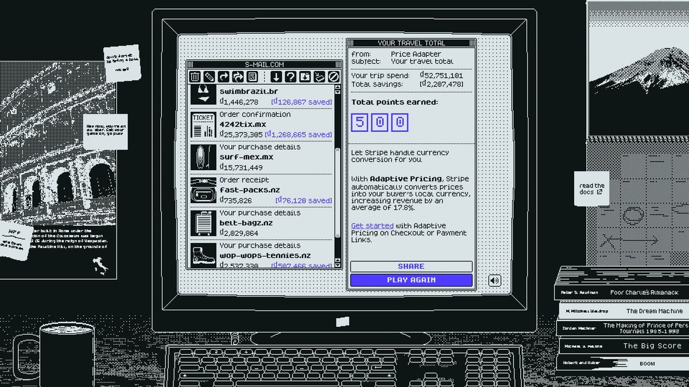
Supplied reference 0103998ad354a9efdbaccc89186757f336.jpg 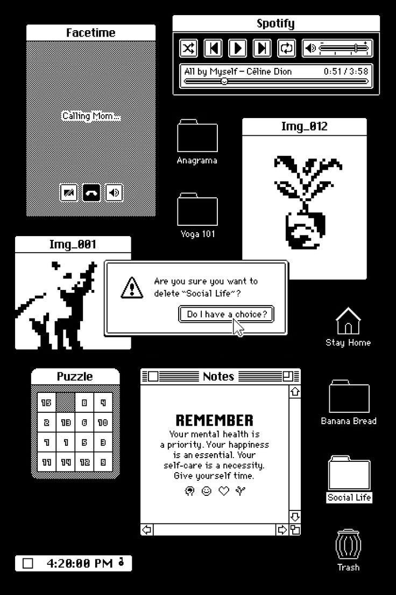
Supplied reference 020873cf52fb9e489159d03909f40e49f1.jpg 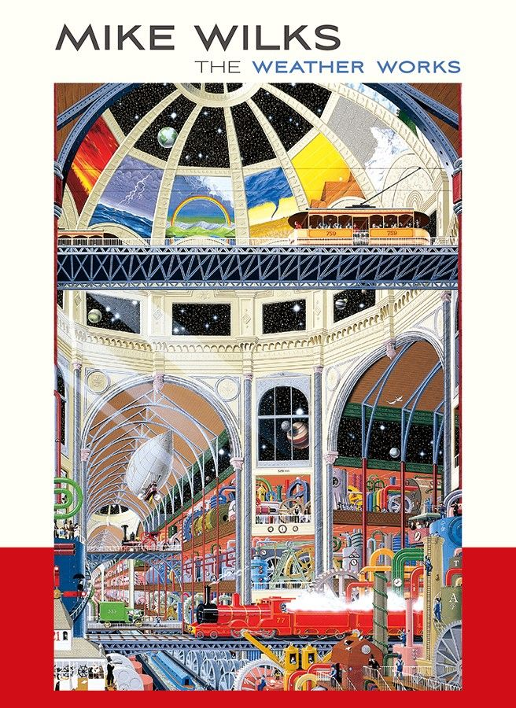
Mike Wilks book-cover reference095c657c898b32b5a007b263536722ac.jpg Poolside.fm desktop101341dd4f16c9470a1f6cdda5692bb2.jpg Supplied reference 051101b0f65f080d5ab77d290681e0091f.jpg 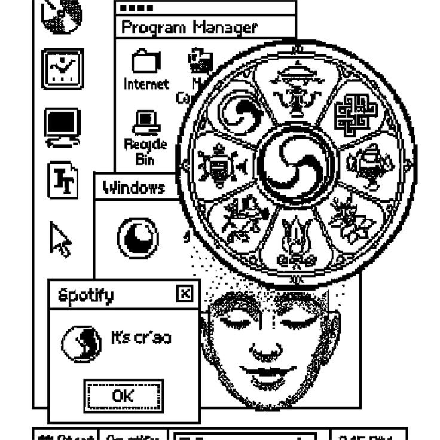
Supplied reference 06156f64c9780fa17db2fe90d0d723a018.jpg 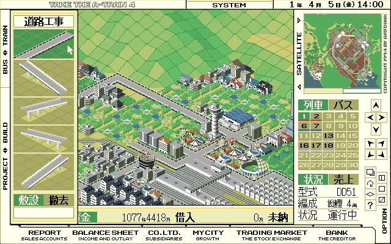
Supplied reference 07304ef81f3fe284695355a2b4c8aa5fde.jpg Macintosh poster317b534090ef603ba8aa35c42a9da02a.jpg 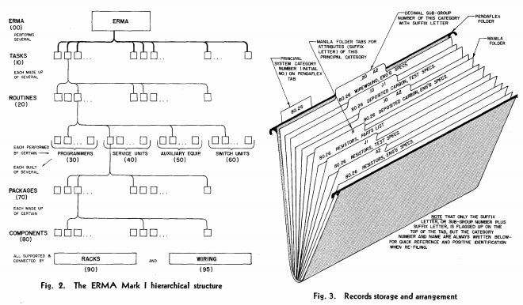
Supplied reference 09398e8f9f6cb627fb6aa4b470cb8a63fe.jpg 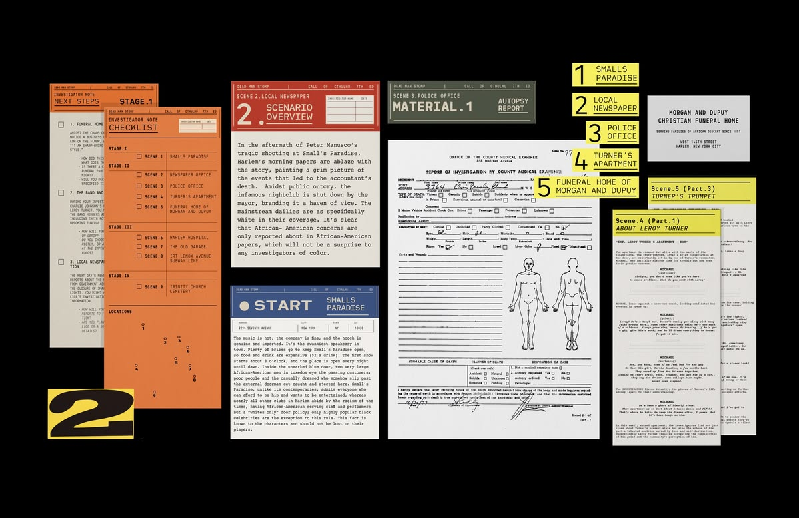
Supplied reference 103a91d2d65e27676145223adfab94abc5.jpg 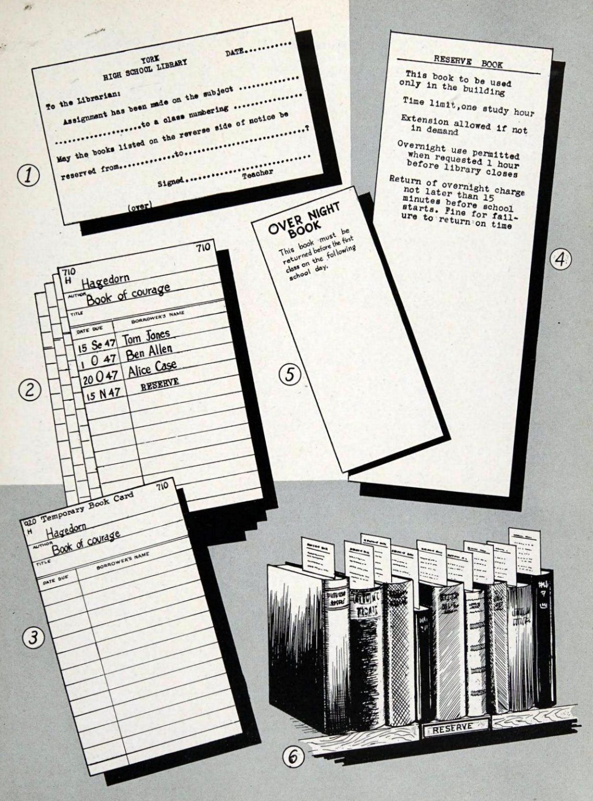
Supplied reference 11594602b0e7f0597a86aa4742798fb6f9.jpg Axonometric sign system6297b0ca2e0c57a267543075a0a5a7ae.jpg 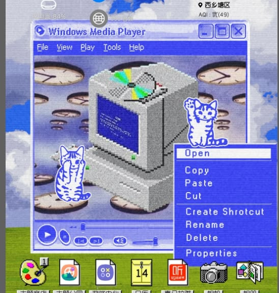
Supplied reference 1387a0a3d0e6442790332fed1f755ac7f9.jpg RollerCoaster Tycoon reference8981d468-ac0d-11ed-897b-02420a00012d.webp 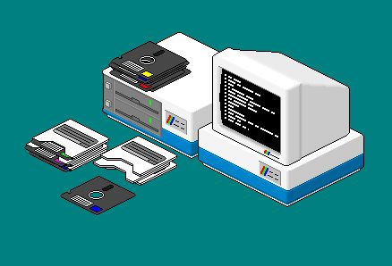
Supplied reference 158c36dfa013ceacd50991c05ba25aba89.jpg 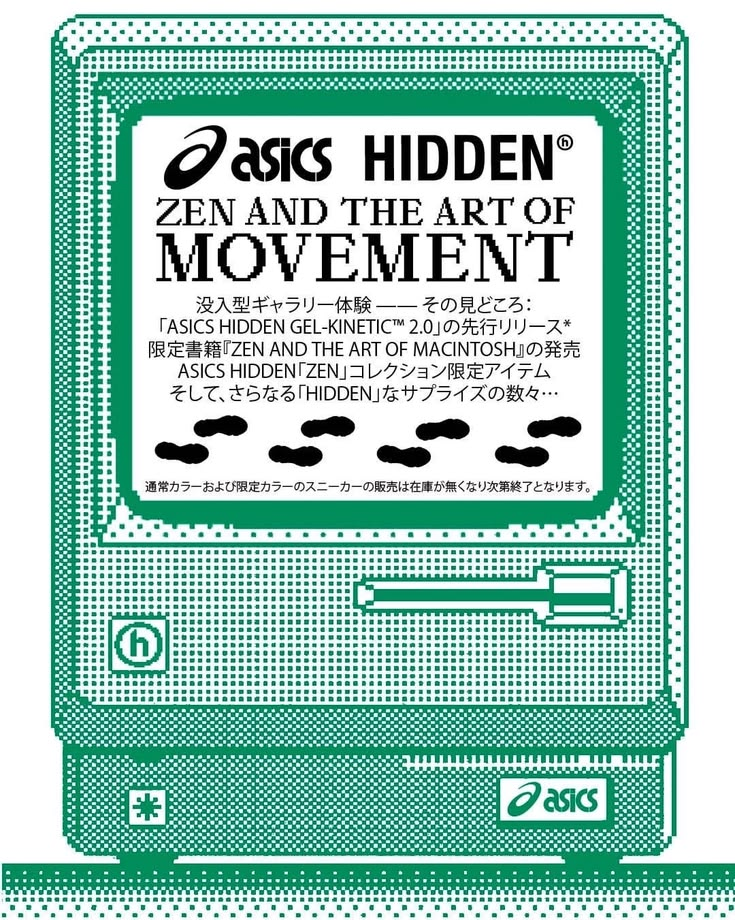
Supplied reference 1694dbe31a8185f2f64de086db08e4b2ac.jpg Pixel computer illustrationa7584db9a9e2d366f5989097f7f8e97e.jpg 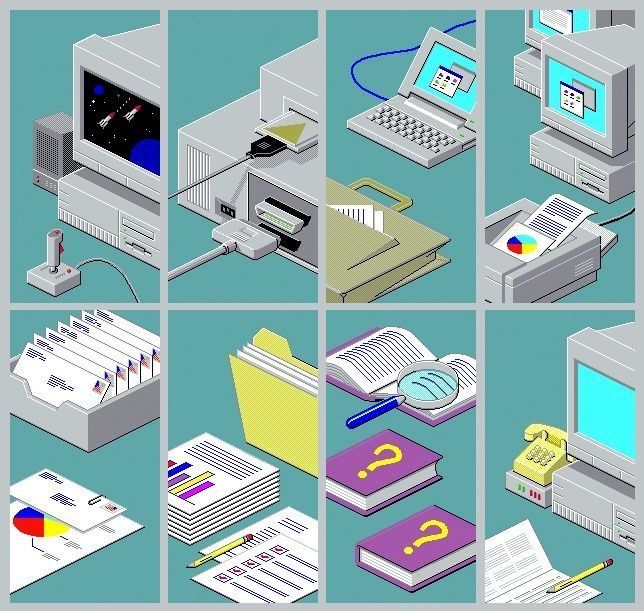
Supplied reference 18b9df8a8b77c52573b9894d3a3181c503.jpg 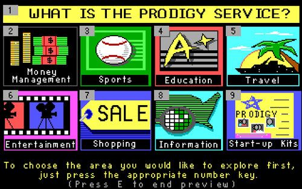
Supplied reference 19bb6d9f9952e8af0ed8924e93b819c9a5.jpg 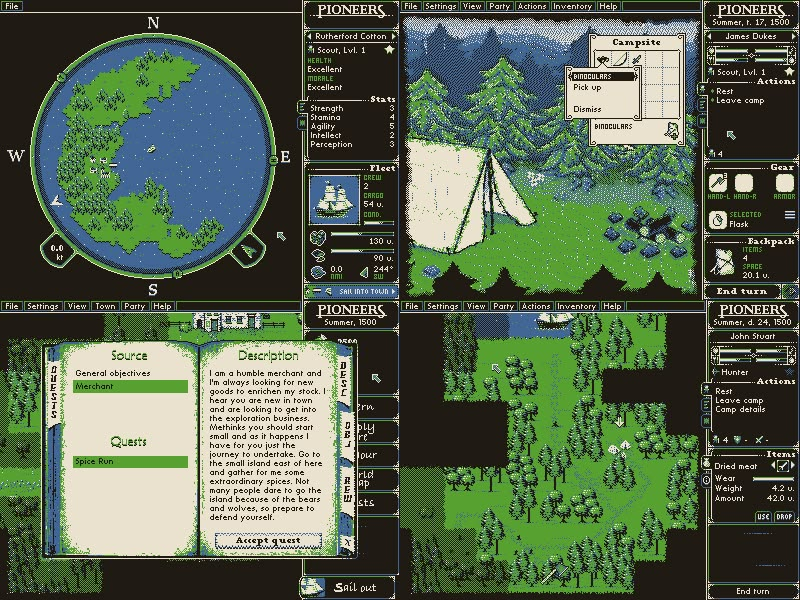
Supplied reference 20c2a0b14fd7fdd985b6e36c5495651244.jpg Supplied reference 21fc64914763b2eb572f9244c12a5bcc20.jpg Supplied reference 22ff8e76a5a3fac86728298a5b11f242b1.jpg Map referencemap.avif 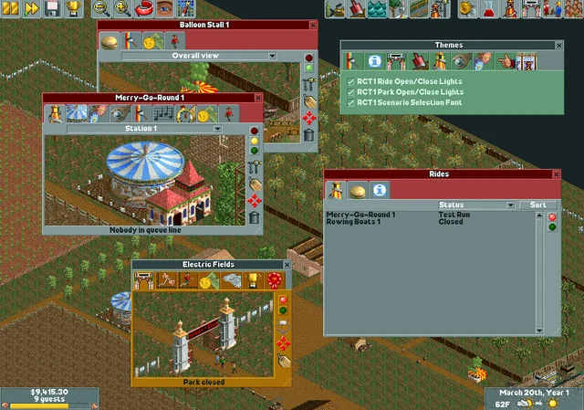
Supplied reference 24now-you-can-use-the-original-rct1-open-close-lights-with-v0-0jEZYYM14DhL35fi_6kPYhbr9agoEXt0u-81-lKTj-8.webp